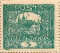
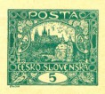
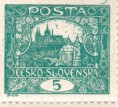
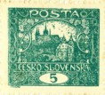
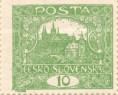
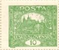
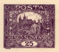
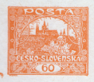
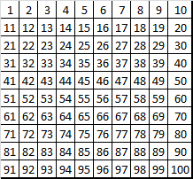
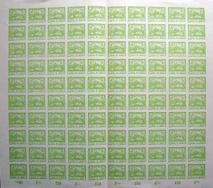

Printing plates
Reconstructions of the complete printing plates of the issue — each plate as a grid of a hundred stamp fields in the order in which they lie in the sheet. The thumbnail for each plate is its first stamp field, an actual stamp from that plate.

5hplate I
5hplate II
5hplate VI
5hplate VIII
10hplate I
10hplate II 15hplate II ★
15hplate II ★
 15hplate III ★
15hplate III ★
 15hplate IV ★
15hplate IV ★
 15hplate V ★
15hplate V ★
 15hplate VI ★
15hplate VI ★
 20hplate II
20hplate II
 25hplate I
25hplate I

25hplate II
60hplate II 120hplate II
120hplate II
 300hplate I
300hplate I
Plates marked ★ lead to the fuller treatment on the 15h site — with a field comparator and statistics.
How the stamp fields are numbered
A Hradčany sheet consists of 100 stamp fields, each with its own number. Some values were printed from several plates, so a stamp is identified by the pair field/plate — 37/III, for instance, is field 37 of the third plate.

Letterpress left a small plate variety on practically every field. What distinguishes one from a random printing flaw is that it recurs on every stamp from the same field of the same plate — which is why it can be catalogued and why it serves to identify a position. Deviations tied instead to one sheet or one pass through the machine are production flaws.
On the individual plate pages, fields are highlighted where a type of the design is recorded — an open spiral, a long crossbar, an arch or an unbroken frame. Details of the types are on the Fifth-design types page.

My guide to the plate varieties has been Jiří Zahradníček’s Hradčany – deskové vady. For identifying the field of a particular copy, Knihtisk.org is an excellent resource.
Plate diagrams to download
Fellow philatelist Radek Novák compiled clear diagrams of the printing plates from Monograph No. 1. The Excel file is free to download.